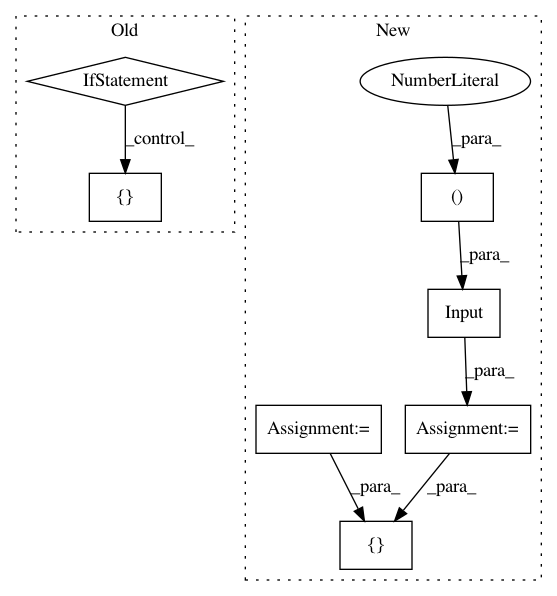

b68db1aaf6abe4d2cea8321cc6f1564228dd60f5,deepchem/models/tensorgraph/models/seqtoseq.py,SeqToSeq,_create_encoder,#SeqToSeq#Any#Any#,145
Before Change
prev_layer = layers.GRU(
self._embedding_dimension, self.batch_size, in_layers=prev_layer)
prev_layer = layers.Gather(in_layers=[prev_layer, self._gather_indices])
if self._variational:
self._embedding_mean = layers.Dense(
self._embedding_dimension, in_layers=prev_layer)
self._embedding_stddev = layers.Dense(
self._embedding_dimension, in_layers=prev_layer)
prev_layer = layers.CombineMeanStd(
[self._embedding_mean, self._embedding_stddev], training_only=True)
return prev_layer
def _create_decoder(self, n_layers, dropout):
Create the decoder layers.
After Change
def _create_encoder(self, n_layers, dropout):
Create the encoder as a tf.keras.Model.
input = self._create_features()
gather_indices = Input(shape=(2,), dtype=tf.int32)
prev_layer = input
for i in range(n_layers):
if dropout > 0.0:
prev_layer = Dropout(rate=dropout)(prev_layer)
prev_layer = GRU(
self._embedding_dimension, return_sequences=True)(prev_layer)
prev_layer = Lambda(lambda x: tf.gather_nd(x[0], x[1]))(
[prev_layer, gather_indices])
return tf.keras.Model(inputs=[input, gather_indices], outputs=prev_layer)
def _create_decoder(self, n_layers, dropout):
Create the decoder as a tf.keras.Model.
In pattern: SUPERPATTERN
Frequency: 3
Non-data size: 7
Instances
Project Name: deepchem/deepchem
Commit Name: b68db1aaf6abe4d2cea8321cc6f1564228dd60f5
Time: 2019-05-31
Author: peastman@stanford.edu
File Name: deepchem/models/tensorgraph/models/seqtoseq.py
Class Name: SeqToSeq
Method Name: _create_encoder
Project Name: deepchem/deepchem
Commit Name: b68db1aaf6abe4d2cea8321cc6f1564228dd60f5
Time: 2019-05-31
Author: peastman@stanford.edu
File Name: deepchem/models/tensorgraph/models/seqtoseq.py
Class Name: AspuruGuzikAutoEncoder
Method Name: _create_encoder
Project Name: stellargraph/stellargraph
Commit Name: 59266e34e076ed25852bccf5ce13025b5408406f
Time: 2019-05-28
Author: andrew.docherty@data61.csiro.au
File Name: stellargraph/layer/gcn.py
Class Name: GCN
Method Name: node_model